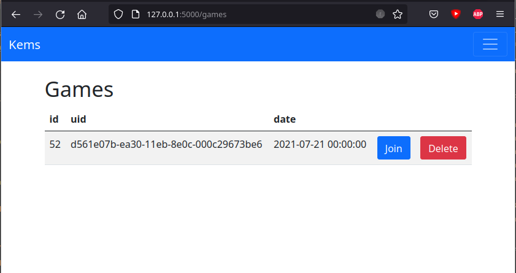
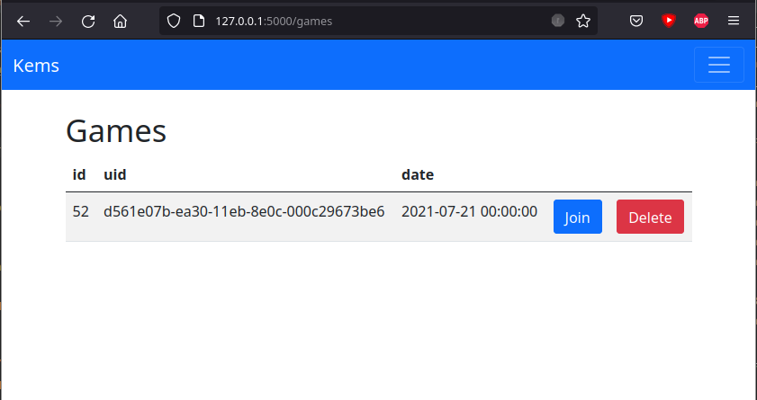

Ce jeux reprend le principe d’un jeu, le kems. Les rêgles sont les suivantes :
- Il y a un nombre paire de joureurs avec 4 cartes chacun
- Les joueurs en face l’un de l’autre sont coéquipiés
- Il faut échanger ses cartes avec les 4 cartes du centre dans l’objectif d’avoir 4 cartes de même valeur (c’est ce qu’on appel un kems)
- Si plus personne n’échange de carte elles sont remplacées
- Lorsqu’un joueur a un kems il doit le faire comprendre à son coéquipié sans que les autres ne le devine
- Si un joueur pense que son coéquipié a un kems il dit "Kems !" voir "Double kems" s’il a aussi lui même un kems
- Si un joueur pense qu’un adversaire a un kems il annonce "Contre kems !"
Dans cette version informatique du kems les joueurs communiquent par visio conférences. Le programme est composé de plusieurs clients et d’un serveur central. Les communications sont faite en passant par des sockets.
Les commentaires youtube

Ce programme permet de téléchager les commentaires youtube sous les vidéos puis de les parcourir pour sauvegarder ceux qui retiennent l’attention. Les trois colonnes sur la droites permettent de trier par chaine youtube, par vidéo et par conversation. À gauche on peu voir la conversation selectionnées. En dessous se trouve la liste des conversation sauvegardées.
Quiz départements

Ce projet est une application android qui permet de réviser les numéros des départements de france métropolitaine. C’est un quiz qui demande le numéro pour un département donnée, le nom et l’emplacement géographique sont affichés. Si une erreur est faite alors on doit tout recommencer, le but est de pouvoir répondre correctement pour les 96 numéros d’une seule traite.
25case

Ce jeu est un mix entre le rubik’s cube et le taquin. On déplace seulement le numéro 25. Le but est de remettre dans l’ordre les numéros de la grille. Lorsqu’un numéro est correctement placé il s’affiche en jaune.
Maxicase

Les rêgles sont compliquées
Travel Star

Vaisseau en orbite autour d’une planète. Passe de planète en planète.
Tronio

Jeu tron en 2D.
Labyrinthe


Fusion aléatoire de chemins. Généralisation en 4D
Résolution rubik’s cube

Tester des formules de rubik’s cube.
Supermorpion

Morpion plus plus.
Le jeu des 4 couleurs


 
